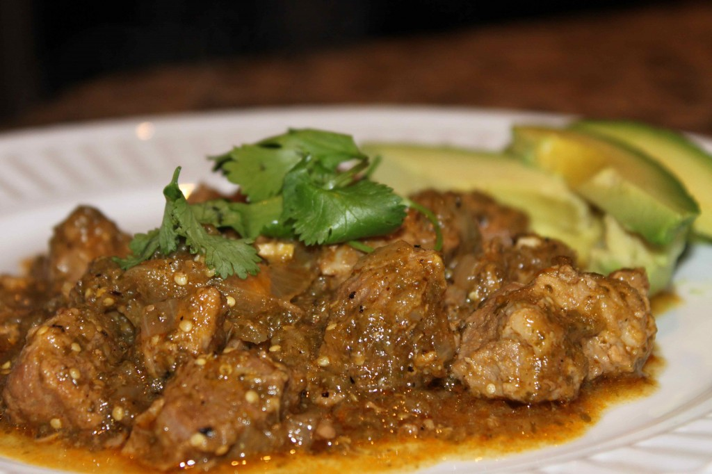

Paleo Chili Verde Recipe

Description
This is the only chili verde recipe you will ever need. It's delicious by itself or over white rice.
Ingredients
- Pork shoulder roast
- Tomatillos
- Chicken Stock
- Coconut Oil
- Yellow Onion
- Garlic Cloves
- Cilantro
- Lime Juice
- Jalapeno
- Cumin
- Smoked Paprika
- Black Pepper
- Sea Salt
Steps
- Cut pork roast into 1/2 inch cubes.
- Heat the coconut oil over medium high in a large soup pot and add the pork once the oil is hot enough that it sizzles when you add a piece of meat.
- Brown the pork pieces for 4-5 minutes and remove the pork from the pan with a slotted spoon and set aside.
- Add the onions and garlic to the oil and pork drippings and saute for 7-10 minutes or until the onions start to brown.
- Turn the heat down a bit and add the cumin, paprika, and black pepper to the onions and garlic and mix well (it will be kind of pasty).
- Add the chicken broth to the onion mixture and mix well, making sure to scrape all the goodness off the bottom of the pan.
- Add the pork back to the soup pot into the liquid and bring to a boil. Turn down to low.
- While the meat simmers, peel and wash the tomatillos. Dry them weel and in a large skillet over medium heat, char them along with the jalapeno, turning often, until the skins start to blacken.
- Place the charred tomatillos, jalapeno, cilantro, and lime juice into a food processor or blender and blend until smooth.
- Add to the pork in the soup pot and simmer for 2 to 2.5 hours or until the pork is fall apart tender.
- The sauce will reduce down and become thicker over the course of the cooking process. Serve with sliced avocado and cilantro for garnish.
Back to Main Menu